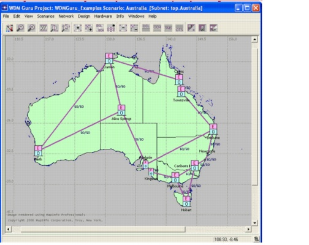
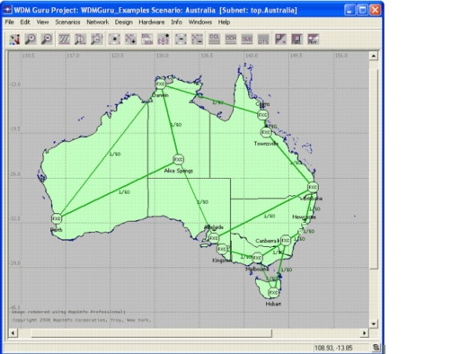
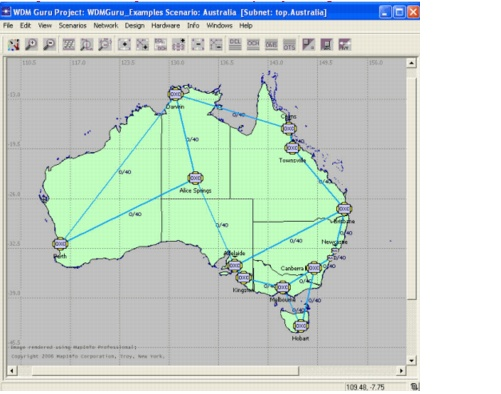
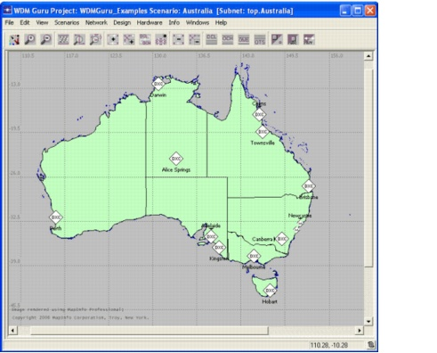
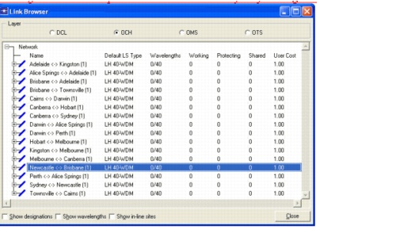

Introduction > Exploring an Example Network
Introduction
Exploring an Example Network
In this section, you explore a preloaded example network that is provided as part of the standard SP Guru Transport Planner installation.
Procedure 1-1 Exploring the Example Network
- Open the WDMGuru_Examples project.
- Select File > Open.... The Open dialog box displays.
- Select the WDMGuru_Examples project, then press Open.
The example project, which contains several scenarios, is loaded.
The first scenario, called Australia, appears in the workspace.
- Explore the layers.
There are different layers in SP Guru Transport Planner: the LOP, DCL, OCH, OMS, and OTS layers. The following steps describe the different layers in more detail.
To switch between layers, use the OTS, OMS, OCH, and DCL buttons on the toolbar. Note that no LOP layer view is available.
The Optical Transmission Section (OTS) layer represents the physical topology, comprising the cables and sites. In this layer, a different icon represents the type of each node, which can be one of four types:
- EOCC—an electrical and optical cross-connect
- ECC—an electrical cross-connect
- OCC—an optical cross-connect
- Cable Splitter—bifurcation point for optical fiber pairs
The OTS layer also represents the cable infrastructure between the nodes. The numerical annotation alongside each link indicates the number of fiber pairs physically contained within the cable. Note that in this example only nodes of the EOCC type are deployed and that each cable contains 50 fiber pairs.

The Optical Multiplex Section (OMS) layer represents the lit fibers (fibers in use) on each link. The link annotation shows the lit fibers versus total fibers.Note that in this example, one fiber pair (out of the 50 available) has been lit on each cable.

The Optical Channel Layer (OCH) represents optical channels or wavelengths. In this layer, optical traffic is routed. The links are annotated with used and total number of optical channels. In this example, no traffic is accommodated in the OCH layer (i.e., no wavelengths are in use).

The layer below is the Digital Client Layer (DCL) and represents the SONET/ SDH network. In this layer, SONET/ SDH traffic is routed. Physical and logical DCL links are distinguished by the following characteristics:
- Physical DCL links connect an ECC node with an ECC or EOCC node. In this case, the SONET trunk capacity is implemented directly by the fiber (OMS) layer and each fiber supports only one SONET trunk.
- Logical DCL links are supported by non-native OCH layer connections between two EOCC nodes. A routed non-native OCH connection is "trailed" to the DCL layer and creates a logical link in the DCL layer. Such a connection is created to carry DCL traffic, while a native OCH connection supports wavelength services. The capacity of the logical DCL link corresponds to the capacity that can be hosted by the OCH connection. For example, an OC-48 optical channel, trailed to the DCL layer, creates a SONET trunk that can host OC-48 or its equivalent STS-48 traffic, in other words, 48 STS-1's.
Note that neither physical DCL links (no ECC nodes) nor logical DCL links (no OCH traffic is accommodated in the network) are present in this example.

- The node and link properties can be explored per layer in the node and link browsers. Select Network > Node Browser or Network > Link Browser, or double-click on a node or link. Within a browser, use the radio buttons at the top to select the layer you want to inspect.

- In the browser, right-click anywhere in the row of a node or link to get the list of actions that can be performed or attributes that can be set for this element. The possible actions depend on the element, the current layer, and the network status. For example, in the node browser at the OTS layer you can edit the node location, the node type (as no traffic is yet routed in the network), and so on. See the SP Guru Transport Planner User Guide for an overview of the attributes that can be edited.
- Close the node and link browser.
- Click on the buttons at the far right of the toolbar, called Show/Hide Node Icons, Show/Hide Node Names, and Show/Hide Link Annotations. These three operations allow you to hide or show various elements of the display, so you can view the information of interest, or reduce the complexity of the network diagram.
- Close the project without saving it to disk.
End of Procedure 1-1
| Home © 1987-2007 OPNET Technologies, Inc. All Rights Reserved. This software may be covered by one or more U.S. Patents. See complete patent notice in the Legal Notices section. OPNET Support Center |